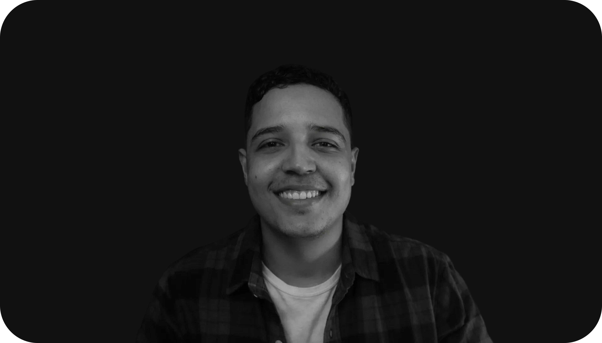

A system is only as good as what it lets you read in the half-second before you decide what to do.
Hi, I'm Jose Alvarez
I'm a UI Artist. I design progression systems, character states and the interfaces that make a system readable at a glance — XP economies, reward tiers, streaks, fail states, and the visual language that carries all of it.
I built ESA (Emotional State Architecture) — a four-state machine where every state has a trigger, a psychological mechanism and an action it invites. It's the logic behind the characters, tiers and fail states in DuoGit and Cuak, and it's what I'm currently applying to a physical device with its own diegetic interface.
I also build what I design — UX Lab OS is an agentic tool I shipped to production, and I'm finishing a software development degree. It's not a separate career: it's why my prototypes behave instead of just animating.
Based in Colombia. UTC-5. Open to roles and contracts in game UI, UI art and interactive systems.

What I Work On
- Game UI — HUDs, menus, states and diegetic interfaces
- Progression systems — XP economies, reward tiers, leaderboards
- Character design as a feedback system
- Fail states and comeback loops
- UI style guides, iconography and motion
Highlights
- DuoGit (progression system + HUD widget family)
- Cuak (character-driven interface, playtested)
- Created ESA — Emotional State Architecture
- Shipped UX Lab OS (agentic tool, in production)
- CalArts UI/UX Specialization
- Software Dev degree in progress (TecMD)